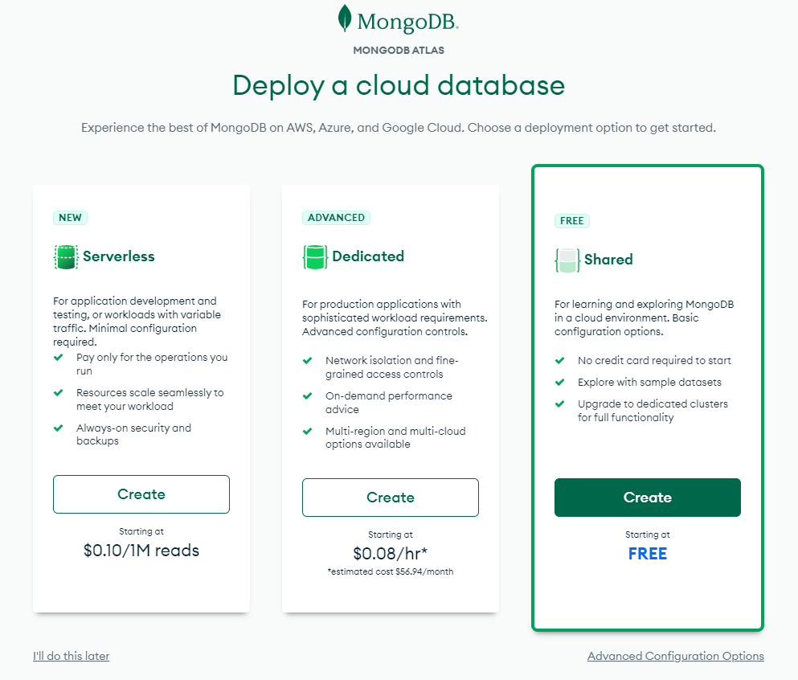
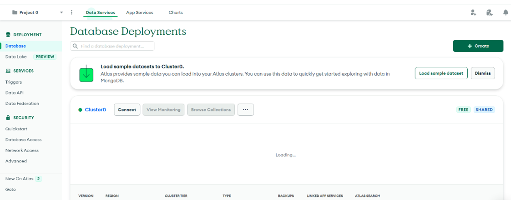

Entorno de desarrollo - Nodejs
Instalación de herramientas
Las herramientas básicas que vamos a utilizar para esta tecnología son:
Visual Studio Code
Lo primero de todo es instalar el IDE para el desarrollo en node si no lo has hecho previamente.
Te recomiendo utilizar Visual Studio Code, en un IDE que a nosotros nos gusta mucho y tiene muchos plugins configurables. Puedes entrar en su página y descargarte la versión estable.
Nodejs
El siguiente paso será instalar el motor de Nodejs. Entrando en la página de descargas e instalando la última versión estable. Con esta herramienta podremos compilar y ejecutar aplicaciones basadas en Javascript y Typescript, e instalar y gestionar las dependencias de las aplicaciones.
MongoDB Atlas
También necesitaremos crear una cuenta de MongoDB Atlas para crear nuestra base de datos MongoDB en la nube.
Accede a la URL, registrate grátis con cualquier cuenta de correo y elige el tipo de cuenta gratuita 😊:

Configura el cluster a tu gusto (selecciona la opción gratuita en el cloud que más te guste) y ya tendrías una BBDD en cloud para hacer pruebas. Lo primero que se muestra es el dashboard que se verá algo similar a lo siguiente:

A continuación, pulsamos en la opción Database del menú y, sobre el Cluster0, pulsamos también el botón Connect. Se nos abrirá el siguiente pop-up donde tendremos que elegir la opción Connect your application:

En el siguiente paso es donde se nos muestra la url que tendremos que utilizar en nuestra aplicación. La copiamos y guardamos para más tarde:

Pulsamos Close y la BBDD ya estaría creada.
Nota: Al crear la base de datos te aprecerá un aviso para introducir tu IP en la whitelist, asegúrate no estar en la VPN cuando lo hagas, de lo contrario no tendrás conexión posteriormente.
Herramientas para pruebas
Para poder probar las operaciones de negocio que vamos a crear, lo mejor es utilizar una herramienta que permita realizar llamadas a API Rest. Para ello te propongo utilizar Postman, en su versión web o en su versión desktop, cualquiera de las dos sirve.
Con esta herramienta se puede generar peticiones GET, POST, PUT, DELETE contra el servidor y pasarle parámetros de forma muy sencilla y visual. Lo usaremos durante el tutorial.
Creación de proyecto
Para la creación de nuestro proyecto Node nos crearemos una carpeta con el nombre que deseemos y accederemos a ella con la consola de comandos de windows. Una vez dentro ejecutaremos el siguiente comando para inicializar nuestro proyecto con npm:
npm init
Cuando ejecutemos este comando nos pedirá los valores para distintos parámetros de nuestro proyecto. Aconsejo solo cambiar el nombre y el resto dejarlo por defecto pulsando enter para cada valor. Una vez que hayamos terminado se nos habrá generado un fichero package.json que contendrá información básica de nuestro proyecto. Dentro de este fichero tendremos que añadir un nuevo parámetro type con el valor module, esto nos permitirá importar nuestros módulos con el estándar ES:
{
"name": "tutorialNode",
"version": "1.0.0",
"description": "",
"main": "index.js",
"scripts": {
"test": "echo \"Error: no test specified\" && exit 1"
},
"keywords": [],
"author": "",
"license": "ISC",
"type": "module"
}
Instalar dependencias
En ese fichero aparte de la información de nuestro proyecto también tendremos que añadir las dependencias que usara nuestra aplicación.
Para añadir las dependencias, desde la consola de comandos y situados en la misma carpeta donde se haya creado el fichero package.json vamos a teclear los siguientes comandos:
npm i express
npm i express-validator
npm i dotenv
npm i mongoose
npm i mongoose-paginate-v2
npm i normalize-mongoose
npm i cors
npm i nodemon --save-dev
También podríamos haber instalado todas a la vez en dos líneas:
npm i express express-validator dotenv mongoose mongoose-paginate-v2 normalize-mongoose cors
npm i nodemon --save-dev
Las dependencias que acabamos de instalar son las siguientes:
- Express es un framework de Node que nos facilitara mucho la tarea a la hora de crear nuestra aplicación.
- Dotenv es una librería para usar variables de entorno.
- Mongoose es una librería ODM que nos ayudara a los accesos a BBDD.
- Nodemon es una herramienta que nos ayuda reiniciando nuestro servidor cuando detecta un cambio en alguno de nuestros ficheros y así no tener que hacerlo manualmente.
- Cors es una herramienta que nos ayuda a configurar el CORS de nuestra app para que posteriormente podemos conectarlo al front.
Ahora podemos fijarnos en nuestro fichero package.json donde se habrán añadido dos nuevos parámetros: dependencies y devDependencies. La diferencia está en que las devDependencies solo se utilizar en la fase de desarrollo de nuestro proyecto y las dependencies se utilizarán en todo momento.
Configurar la BBDD
A partir de aquí ya podemos abrir Visual Studio Code, el IDE recomendado, y abrir la carpeta del proyecto para poder configurarlo y programarlo. Lo primero será configurar el acceso con la BBDD.
Para ello vamos a crear en la raíz de nuestro proyecto una carpeta config dentro de la cual crearemos un archivo llamado db.js. Este archivo exportará una función que recibe una url de nuestra BBDD y la conectará con mongoose. El contenido de este archivo debe ser el siguiente:
import mongoose from 'mongoose';
const connectDB = async (url) => {
try {
await mongoose.connect(url);
console.log('BBDD connected');
} catch (error) {
throw new Error('Error initiating BBDD:' + error);
}
}
export default connectDB;
Ahora vamos a crear en la raíz de nuestro proyecto un archivo con el nombre .env. Este archivo tendrá las variables de entorno de nuestro proyecto. Es aquí donde pondremos la url que obtuvimos al crear nuestra BBDD. Así pues, crearemos una nueva variable y pegaremos la URL. También vamos a configurar el puerto del servidor.
MONGODB_URL='mongodb+srv://<user>:<pass>@<url>.mongodb.net/?retryWrites=true&w=majority'
PORT='8080'
Arrancar el proyecto
Con toda esa configuración, ahora ya podemos crear nuestra página inicial. Dentro del fichero package.json, en concreto en el contenido de main vemos que nos indica el valor de index.js. Este será el punto de entrada a nuestra aplicación, pero este fichero todavía no existe, así que lo crearemos con el siguiente contenido:
import express from 'express';
import cors from 'cors';
import connectDB from './config/db.js';
import { config } from 'dotenv';
config();
connectDB(process.env.MONGODB_URL);
const app = express();
app.use(cors({
origin: '*'
}));
app.listen(process.env.PORT, () => {
console.log(`Server running on port ${process.env.PORT}`);
});
El funcionamiento de este código, resumiendo mucho, es el siguiente. Configurar la base de datos, configurar el CORS para que posteriormente podamos realizar peticiones desde el front y crea un servidor con express en el puerto 8080.
Pero antes, para poder ejecutar nuestro servidor debemos modificar el fichero package.json, y añadir un script de arranque. Añadiremos la siguiente línea:
"dev": "nodemon ./index.js"
Y ahora sí, desde la consola de comando ya podemos ejecutar el siguiente comando:
npm run dev
y ya podremos ver en la consola como la aplicación ha arrancado correctamente con el mensaje que le hemos añadido.